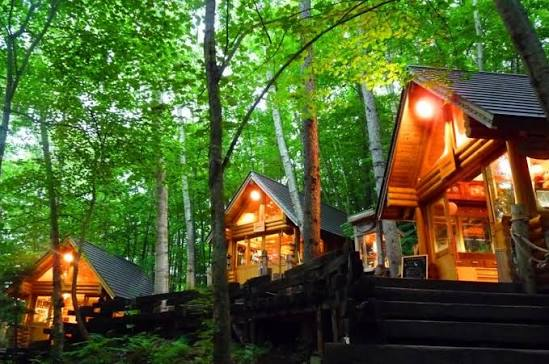
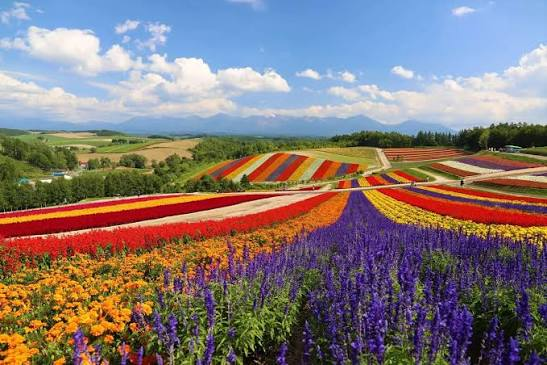
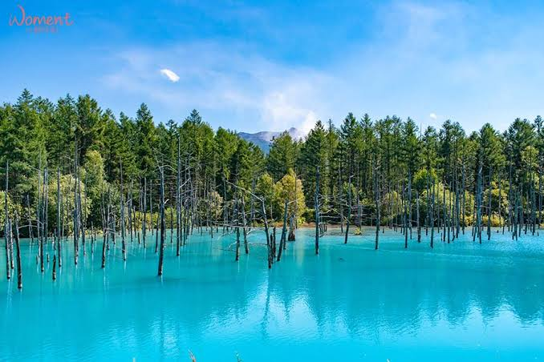
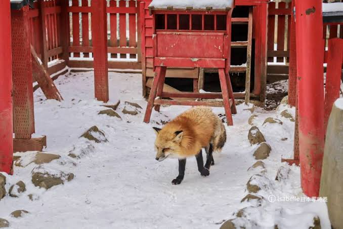
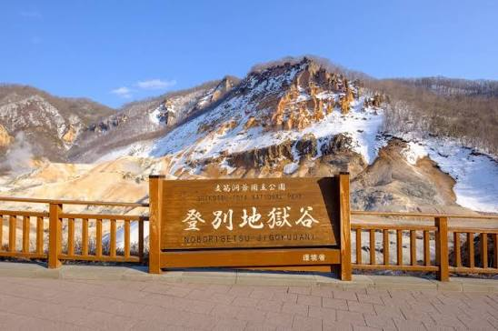
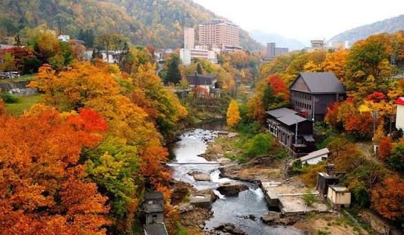
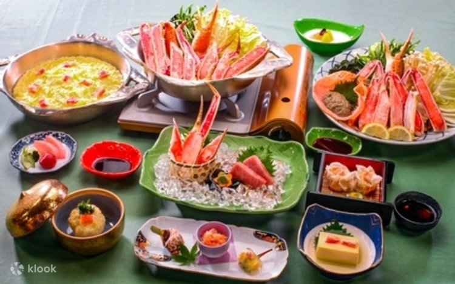

Hokkaido Road Trip · 2026
北海道
九日自駕之旅
富良野 ▸ 美瑛 ▸ 大雪山 ▸ 洞爺湖 ▸ 登別 ▸ 定山溪 ▸ 札幌
每日行程總覽
九天的旅程地圖

DAY 1 · 8/17 (一)
啟程！精靈露台的森林夜光
新千歲機場取車 → 高速直奔富良野 → 暮色森林精靈露台 → 唯我獨尊黑咖哩

DAY 2 · 8/18 (二)
富良野縱谷與彩色花海
富田農場秋之花田 → 富良野果醬園 → 麓鄉展望台俯瞰盆地

DAY 3 · 8/19 (三)
美瑛丘陵 × Tiffany藍青池
拼布之路漫遊 → 四季彩之丘高爾夫車 → 白金青池 → 白鬚瀑布

DAY 4 · 8/20 (四)
大雪山高山探險 × 北狐牧場
層雲峽銀河流星瀑布 → 黑岳纜車五合目 → 北狐牧場被狐狸包圍
DAY 5 · 8/21 (五)
活火山 × 洞爺湖夜間煙火
有珠山纜車火口 → 筒倉展望台日落 → 溫泉旅館 → 湖上煙火大會

DAY 6 · 8/22 (六)
地獄谷 × 支笏湖藍
登別地獄谷 → 大湯沼天然足湯 → 支笏湖透明獨木舟/玻璃船

DAY 7 · 8/23 (日)
定山溪·鶴雅森之謌奢華日
二見吊橋溪谷散策 → 入住鶴雅森之謌 → 露天風呂·岩盤浴·頂級Buffet

DAY 8 · 8/24 (一)
札幌採買衝刺 × 螃蟹本家
螃蟹本家午宴 → 狸小路藥妝採買 → 薄野湯咖哩 → NIKKA霓虹

DAY 9 · 8/25 (二)
新千歲機場·返家
滿油還車 → 機場免稅衝刺 → 拉麵道場 → 登機回台
💳 高速公路提醒：取車時務必加購 ETC 卡 + HEP（北海道高速公路吃到飽）。9天行程建議購買 8+9 天組合，約 15,400～17,200 日圓，讓自駕完全無壓力！
👉 點此查看 ETC/HEP 完整說明
DAY 7 · 2026.08.23 (日)
鶴雅森之謌奢華日
定山溪溪谷散策 → 鶴雅森之謌 → 露天風呂 · 岩盤浴 · 頂級Buffet
今日路線
森林深呼吸 · 徹底放鬆的度假日
🏨 Jozankei Tsuruga Resort Spa MORI no UTA（鶴雅森之謌）：以「與森林漫步」為設計概念，大廳有巨大火爐與現場鋼琴演奏。8月份週日房間非常搶手，請提早訂房！
09:00 – 11:30 · 晨間散步
🌲河童淵 → 二見吊橋
享用早餐後退房，寄行李在車上，在 18-20°C 的清涼早晨散步。
定山源泉公園：免費溫泉足湯 + 用溫泉水煮溫泉蛋
二見吊橋：火紅色吊橋，橋下湛綠清澈的豐平川，傳說居住著河童。迎著帶有水氣的涼風，深深吸一口芬多精。
溪谷散策免費足湯
11:30 – 13:00 · 午餐
🍡坂ノ上の最中（日法融合甜點）
溫泉街上名店，融合日式傳統最中餅（Monaka）與法式慕斯的精緻創意甜點。
午餐推薦鄰近的「可可利（Kakorin）咖啡」—北海道在地香米野菜歐風湯咖哩或手工漢堡排。
甜點湯咖哩
13:30 – 15:00 · 微兜風
🏞️定山溪水壩展望台
開車10分鐘往山裡開。從巨大水壩上方俯瞰，兩旁高聳原始群山與翡翠綠的蓄水湖，幾乎沒有遊客，非常安靜愜意。
秘境
15:00 · 重頭戲
👑入住「定山溪鶴雅森之謌」
門口有專人指引停車並協助提領行李。走進大廳，被巨大高聳原木火爐造型與鋪滿綠色地毯（意象森林草地）的遼闊交誼廳所驚豔。
四星度假村
15:30 – 18:00 · 放鬆時光
♨️露天風呂 · 岩盤浴 · SPA
換上飯店特製純棉連身浴衣，開始頂級 SPA 之旅：
室內大浴場：高挑木質圓頂，猶如在森林中沐浴
露天風呂：泡在保濕鹽泉中，抬頭是綠意盎然的針葉林，微涼山風吹在臉上，頭冷腳熱的完美享受
岩盤浴：躺在溫熱天然礦石上出汗，排出幾天自駕的疲勞
露天風呂岩盤浴
18:30 – 20:30 · 晚餐
🦀「森之自助晚宴」頂級Buffet
溫室景觀餐廳享用 Buffet 晚餐，全日本溫泉飯店中名列前茅：
✦ 主廚現煎北海道頂級和牛排
✦ 現點現做窯烤義式薄脆比薩
✦ 噴火灣大扇貝與海鮮刺身
✦ 無限量供應松葉蟹腳 + 雪場蟹腳
✦ 精品甜點櫃：哈密瓜千層派、在地乳酪蛋糕
必吃頂級Buffet無限螃蟹
21:00 – 22:00 · 浪漫夜晚
🪵中央大火爐旁·烤棉花糖 + 鋼琴演奏
飯店免費提供巨大棉花糖，拿著長竹籤親自在炭火上烤到外焦內融。現場鋼琴或豎琴演奏，在溫暖火光與樂音中，享受這趟旅程最完美的奢華夜晚。
烤棉花糖現場演奏
💡 飯店小撇步：大廳與走廊鋪設極厚實的高級織品地毯，許多在地人喜歡赤腳走在上面，觸感如同踩在森林青苔草地上，非常放鬆！

自駕必讀
💳 ETC / HEP 完整說明
北海道高速公路吃到飽——外國人專屬優惠
三種繳費方式
怎麼繳最划算？
❌ 方案 A（最不推）· 一般車道付現/刷卡
每次停車排隊、搖下車窗、人工收費，費用完全沒折扣，最貴也最麻煩。
⚠️ 方案 B（少跑高速可考慮）· ETC 計次實支實付
租 ETC 卡（330日圓），走 ETC 專用車道自動扣款，最後還車時一次結清。費用與方案A相同，但更方便。
✅ 方案 C（本行程強力推薦）· ETC + HEP 吃到飽
在天數內無論跑幾次高速公路，只收一筆固定費用。開錯路隨時上下交流道完全不用多花一毛錢，帶來無價的安心感！
HEP 官方費率
費用精算
普通車 HEP 定額費用表
4 天7,700 日圓
5 天9,600 日圓
6 天11,600 日圓
7 天13,500 日圓
8 天15,400 日圓
9 天（4+5天疊加）17,200 日圓
⚠️ 注意：租車幾天，HEP 就必須買滿幾天。本行程8/17下午取車到8/25中午還車，跨越9個曆日，費用約 15,400 ~ 17,200 日圓之間（由租車公司依取還車確切時間判定）。
實際費用比較
為什麼買 HEP 划算？
如果不買 HEP 的驚人原價（單程）
新千歲 → 富良野/旭川約 4,810 日圓
旭川 → 洞爺湖約 6,500 日圓
洞爺湖 → 支笏湖/定山溪約 1,500~2,000 日圓
定山溪 → 新千歲機場約 1,430 日圓
原價合計（不含來回/繞路）
超過 14,000~15,000+ 日圓
辦理流程
五步驟完整教學
Step 1 · 出發前（台灣）
💻網路預約租車時勾選 ETC
Toyota Rent-a-car、Orix、Times 等大廠官網，在配件區勾選「租借 ETC 卡」。若可加購 HEP 也直接勾選；若無選項，在備註欄寫上「要加購 HEP」。
Step 2 · 8/17 下午取車
🏢現場櫃檯辦理
出示護照並說：
「I want to purchase HEP (Hokkaido Expressway Pass).」
店員影印護照後，交給您設定好的 ETC 卡，現場收取租車費 + HEP 定額費用。
Step 3 · 出發前
🟢插卡確認
ETC 卡插入車載器後開機應亮綠燈，或發出日文語音「ETCカードが挿入されました」代表感應正常。旅途中千萬不要把卡片拔出來！
Step 4 · 旅途中
🛣️通過收費站
尋找標示紫色「ETC 專用」或藍色「ETC/一般共用」的車道。將車速降至 20 km/h 以下緩慢駛入，螢幕顯示「通行可」，欄木自動升起。
Step 5 · 8/25 中午還車
✅還車結清
工作人員拔下 ETC 卡讀取紀錄。全程 HEP 涵蓋的高速公路，過路費 0 元，直接簽字還車！（若不小心開到少數不支援路段，補繳幾百日圓差額即可）